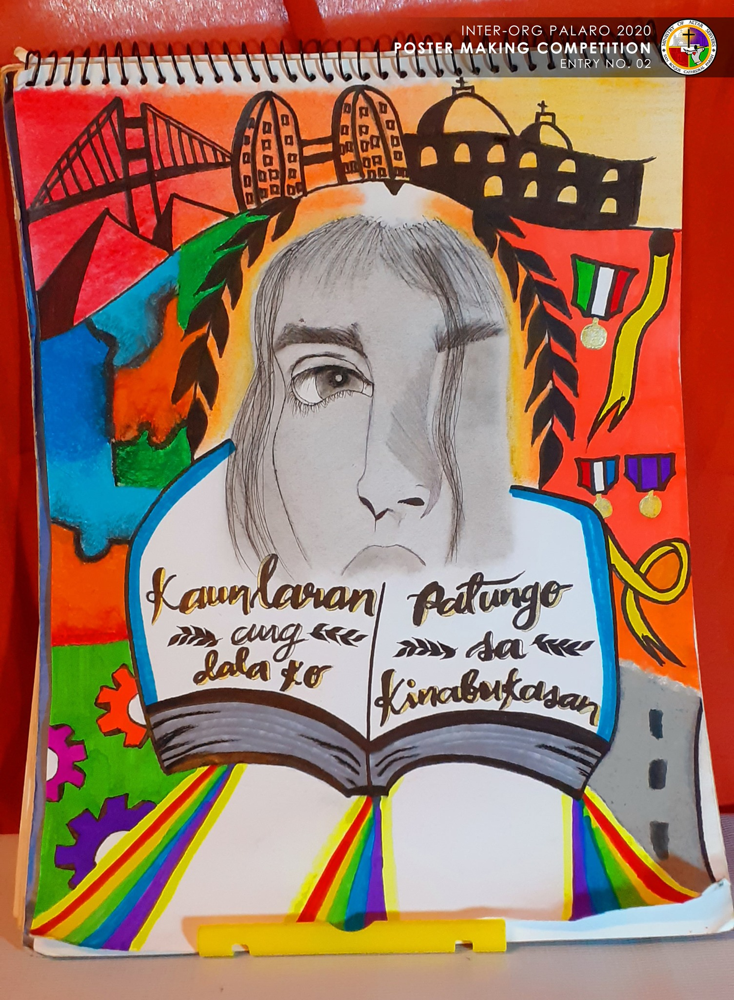
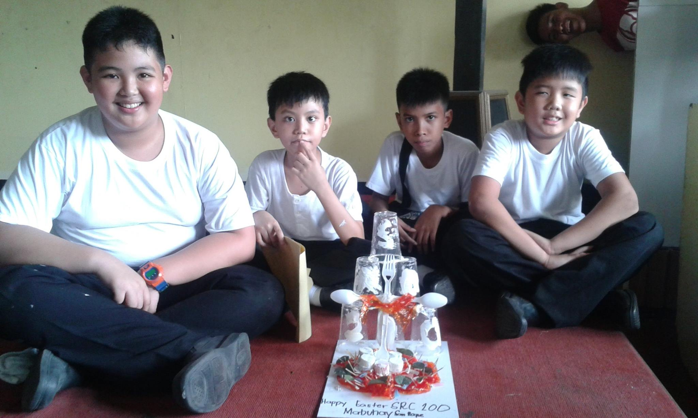

Here are some of the different events that are integrated in the organization's culture. These activities help us develop our link with Christ and God at the center, and they help us create brotherly relationships inside the organization.
Lenten Pa-Contest
These events are conducted during the lenten season and that is also mostly the themes of the following activities.
- Essay Writing - Creating essays on a certain theme pertaining to the Lenten season.
- Poster Making - Making artworks related to Lenten Season by drawing, painting, and coloring.
 An entry on the parish poster making that the ministry handled during 2020.
- Art Jam - Using recycled materials gathered within the vicinity to create art pieces that are related to the theme.
 An entry for art jam during 2017.
- Quizbee - Competing on who has the most knowledge on religious informations.
Summer Outing
During the humid and hot summer days, the group makes every effort to arrange and refresh itself by visiting resorts. The organization not only organizes swimming and water-related activities, but also recreational events (calamansi race, ikot takbo and many more).
A picture used for advertising the ministry during 2012.
A picture used for advertising the ministry during 2012.
An example of the Ministry's accomodation post.
Summer Sports Festival
Different sports and recreational activities are arranged in order to strengthen the members bond.
A picture for the amazing raced theme for the sportsfest of 2010.
A picture of an officer in charge explaining the rules of sportsfest 2012.
Awarding Ceremonies
In the ministry, there are two sorts of awards ceremonies. The first is the mid-year awarding ceremony, which takes place in June and July and honors exceptional and active members. The second is the much-anticipated end-of-year awarding ceremony, which recognizes the Altar Server of the Year who goes above and beyond in serving the community and setting a positive example.
A picture of an event post for Mid- Year awarding of 2018.

A picture of the twins that became Altar Servers Of the Year 2019.
Christmas Party
Every year, in order to commemorate the birth of our Lord and Savior, the ministry plans and executes the most incredible Christmas party experience not only for the members, but also for the community, by accommodating the parish's unfortunate members and enjoying this magnificent event as a whole.
A picture of the Christmas Party of 2019.
Pilgrimage
A sacrilegious journey to historical and religious sites in order to study, worship, adore, and experience unique places that might further strengthen our faith through commemorating the origins of faith in that place.

A group picture of the members partaking a pilgrimage in tarlac during 2018.